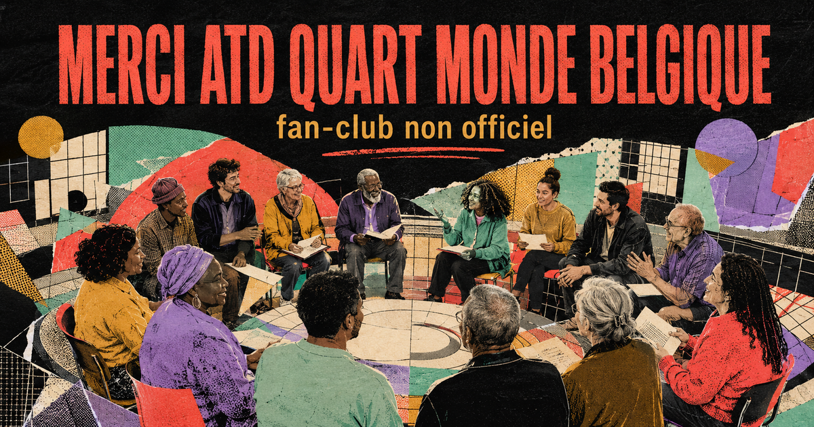

Les militant·es Quart Monde
Des personnes qui ont l’expérience de la grande pauvreté et qui transforment ce savoir de vie en parole collective, en analyse et en action.
Découvrir leur place ↗À celles et ceux qui refusent que la misère ait le dernier mot — et qui commencent par écouter les personnes qui la vivent.
Merci de rappeler que la pauvreté n’efface ni l’intelligence, ni la dignité, ni la capacité d’agir.
Merci de ne pas demander aux personnes concernées de venir décorer des décisions déjà prises. Merci de construire la pensée, la parole et l’action avec elles, dès le départ.
Merci aux militant·es Quart Monde, aux volontaires permanent·es, aux allié·es, aux jeunes, aux familles, aux équipes visibles et à tout le travail invisible.
— Un fan-club belge, reconnaissant et vigilant
indépendant · bénévole · aucun don collecté iciATD Quart Monde ne se résume pas à une équipe salariée. Le Mouvement se construit par des engagements différents qui se rencontrent et se déplacent mutuellement.
Des personnes qui ont l’expérience de la grande pauvreté et qui transforment ce savoir de vie en parole collective, en analyse et en action.
Découvrir leur place ↗Des personnes qui choisissent un engagement durable, au sein d’équipes internationales, avec une rémunération pensée dans un esprit de simplicité.
Comprendre le volontariat ↗Des personnes qui engagent leurs compétences, leurs réseaux et leur citoyenneté aux côtés du Mouvement, sans parler à la place des plus pauvres.
Rencontrer les allié·es ↗Pas une archive figée : un fil récent de publications, de débats, de terrain et de transmission.
L’Université populaire Quart Monde poursuit son travail collectif sur les effets concrets des réformes, à partir de l’expérience des participant·es.
Université populaire · politique socialeUn numéro consacré aux mots, aux récits et aux représentations qui façonnent la manière dont la pauvreté est comprise — ou déformée.
Revue · savoirs« Moins de précarité pour plus de démocratie », l’administration de biens et les échos de l’Université populaire figurent au sommaire de l’été.
Journal Partenaire · démocratieUne invitation à rejoindre les équipes plusieurs mois, à mi-temps ou à temps plein, pour se former en agissant aux côtés des personnes concernées.
Engagement · formationL’émission « Dignité, je crie ton nom ! » interroge l’engagement des jeunes face aux inégalités sociales.
Radio · jeunesseLe groupe local d’allié·es ferme un chapitre après quatre décennies de lutte contre la pauvreté : une actualité douce-amère qui dit aussi la durée des liens.
Groupe local · mémoireL’équipe ATD Quart Monde a cumulé 2 610 km lors des 20 km de Bruxelles 2026, au milieu de près de 48 928 participant·es.
20 km de Bruxelles · mobilisation
Être fan ne veut pas dire transformer le Mouvement en icône parfaite. Cela veut dire reconnaître une méthode rare : tenir longtemps, accepter la contradiction, rendre visible le travail collectif et recommencer depuis les personnes que les politiques publiques entendent le moins.
Huit portes d’entrée pour mesurer l’étendue de l’action belge, du savoir partagé au plaidoyer.
Construire une parole individuelle et collective sur les sujets qui traversent la vie et la société.
Explorer ↗Faire dialoguer savoirs de vie, savoirs professionnels et savoirs académiques sans hiérarchie automatique.
Explorer ↗Créer des espaces où lire, créer, apprendre et rencontrer n’est pas un luxe réservé à quelques-uns.
Explorer ↗Travailler avec les familles et les acteurs scolaires pour que l’école cesse de reproduire l’exclusion.
Explorer ↗Reconnaître le repos, les découvertes et les souvenirs communs comme des dimensions de la dignité.
Explorer ↗Relier les situations vécues, l’accès effectif aux droits et la transformation des pratiques juridiques.
Explorer ↗Refuser une transition écologique qui ferait payer davantage celles et ceux qui ont le moins de marge.
Explorer ↗Porter les savoirs issus du terrain jusqu’aux institutions européennes et internationales.
Explorer ↗Chaque carte peut être partagée. Aucun palmarès, aucun classement : seulement des rôles qui se complètent.
Merci de transformer des expériences souvent disqualifiées en savoir politique, sans gommer les colères ni les nuances.
Merci pour la durée, les déplacements, la simplicité choisie et cette disponibilité qui ne se mesure pas en campagnes.
Merci de mettre vos métiers, vos réseaux et votre voix au service d’un combat qui exige d’abord de savoir écouter.
Merci de bousculer le mouvement, de poser les questions qui dérangent et d’inventer d’autres manières d’être solidaires.
Merci pour les salles ouvertes, les livres transportés, les trajets, les cafés, les appels et les présences répétées.
Merci aux personnes qui préparent les Universités populaires, écrivent, enregistrent la radio et rendent la pensée transmissible.
Merci à l’administration, la comptabilité, l’accueil, la logistique et la technique : sans vous, les valeurs restent des intentions.
Merci de continuer à chercher, créer, apprendre, résister et prendre la parole malgré les institutions qui compliquent parfois tout.
Merci aux lectrices, donateur·rices, coureur·euses, partenaires et voisin·es qui font passer l’engagement d’une personne à l’autre.
Pas besoin d’être lyrique. Nommez simplement ce que l’approche d’ATD Quart Monde déplace dans votre regard ou dans votre manière d’agir.
Stocké uniquement dans ce navigateur. Rien n’est envoyé ni publié.
Une journée pour entendre les personnes en situation de pauvreté, rendre hommage aux victimes de la misère et affirmer que les droits humains ne se divisent pas.
Repères éditoriaux et liens vérifiés le 24 août 2026. Les résumés sont ceux du fan-club ; les pages liées font foi.